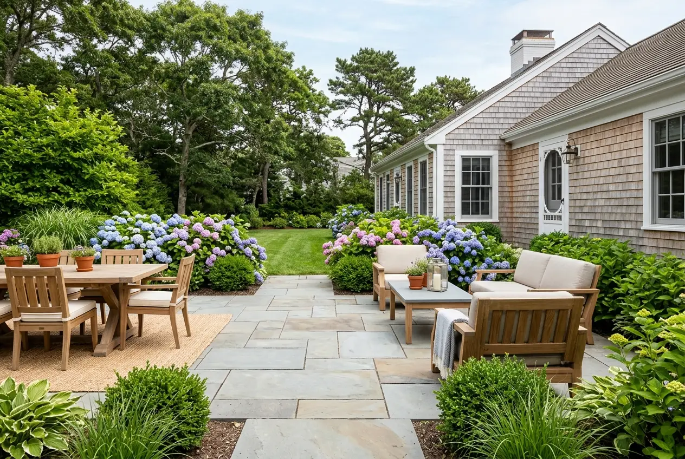
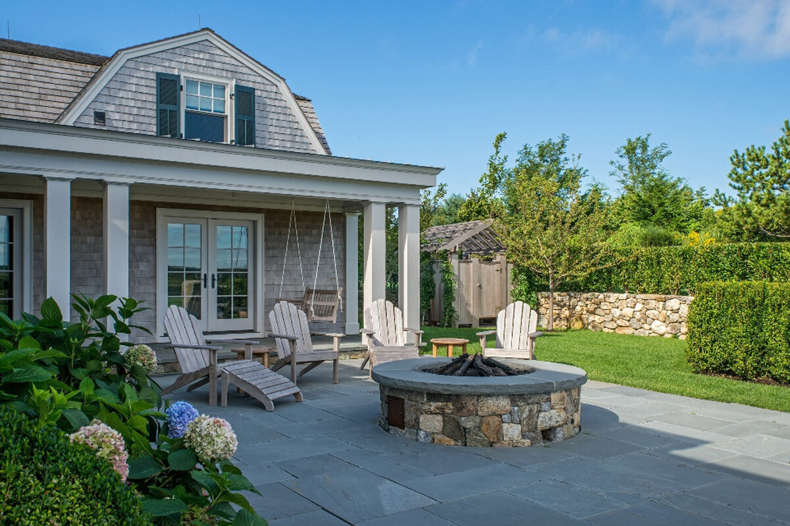
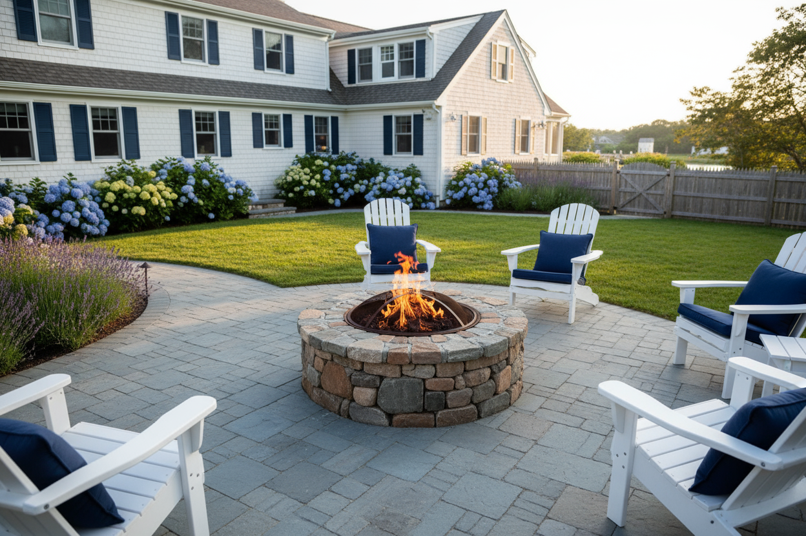
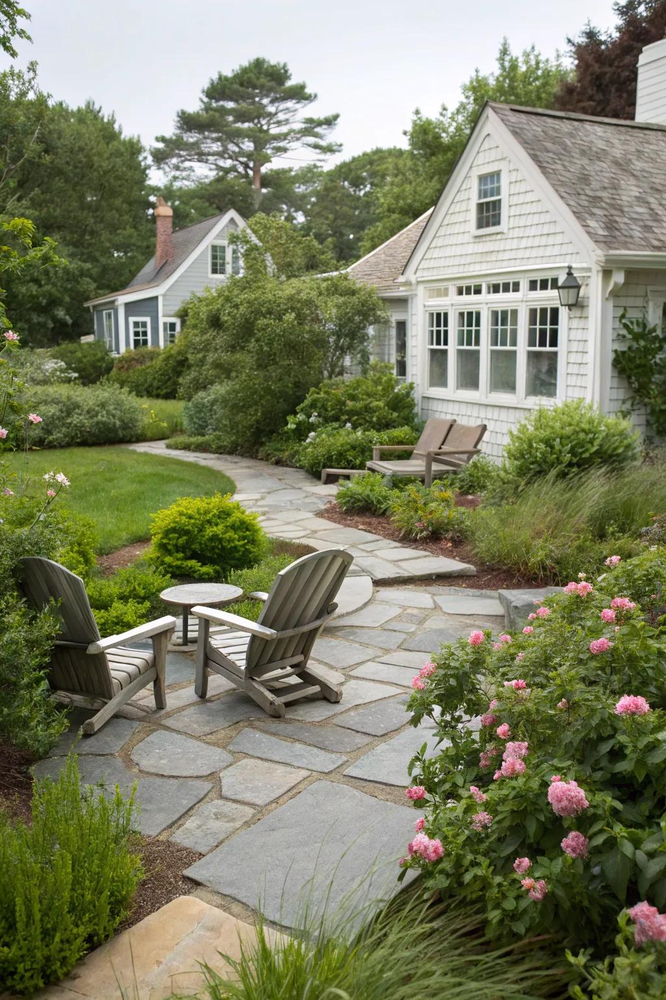

01 ─
Pavers + Flagging
Create beautiful, durable patios, walkways and gathering spaces with natural stone pavers and flagging.
EXPLORE PAVERS + FLAGGING →Natural, manufactured and reclaimed stone for patios, walls, pools, veneer, steps and outdoor spaces. Timeless materials for a more beautiful outdoors.

From classic New England granite to curated stones from around the world, explore natural, manufactured and reclaimed stone. Browse by material or start with the project.
◉Create beautiful, durable patios, walkways and gathering spaces with natural stone pavers and flagging.
EXPLORE PAVERS + FLAGGING →
Build retaining walls, garden walls and architectural features with stone that stands the test of time.
EXPLORE WALLSTONE →Bring natural stone character to façades, fireplaces, chimneys, foundations and interior walls.
EXPLORE STONE VENEER →

Add character and function with natural stone steps, treads and custom stair solutions.
EXPLORE STEPS + TREADS →Choose the space. We’ll point you toward the material family that makes sense.
A range of materials and styles for every project.
Consistent quality. Timeless looks.
History brought to life.
Classic materials for distinctive spaces.
Boulders, caps and finishing essentials.
From naturally cleft to tumbled and reclaimed, each finish changes how stone reads in a space.
Cape Cod’s timeless landscapes inspire a material palette that feels natural to the architecture, climate and coast.
Quality stone from trusted partners.
Guidance on stone, quantity and finish.
Planning for the home or job site.
Estimate materials for your project.
Learn key terms and definitions.
Get expert advice and inspiration.
Our team is here to help.
Color, cleft, movement and scale are difficult to judge from a screen. Compare options in person and bring project photos or plans.
FIND A LOCATIONFrom product selection to delivery, the team is here to help find the right stone for a lasting result.
TALK TO A SPECIALIST REQUEST A QUOTE